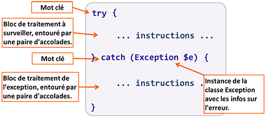
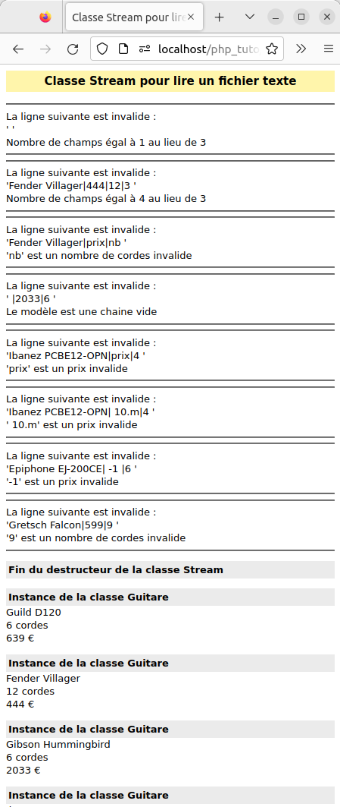
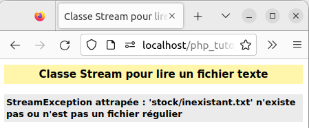

Les exceptions sont une autre façon de traiter le déclenchement des erreurs et leur traitement.
Pour signaler qu'une erreur s'est produite, une méthode lance une exception (ou lève une exception). Le code appelant la méthode doit capturer l'exception et traiter le problème s'il en est capable.
Quand une exception est lancée (mot-clé throw), l'interpréteur PHP arrête
l'exécution normale du script et transmet l'exception de bloc de code appelant en bloc de code
appelant.
Si PHP trouve un bloc capturant l'exception (mot-clé catch), l'exception est
traitée dans le code de ce bloc puis le script continue son exécution juste après le bloc
catch.
Si aucun bloc catch n'est rencontré, l'interpréteur PHP affiche le message d'erreur de l'exception et arrête le script.
La classe native
Exception
est la classe de base de toutes les exceptions utilisateur en PHP.
Par exemple, la classe
mysqli_sql_exception
, utilisée dans nos fonctions bdConnect() et bdSendRequest(),
dérive de la classe
RuntimeException,
qui elle même dérive de la classe
Exception.
Pour lancer une exception on utilise le mot-clé throw suivi de l'instanciation
d'une nouvelle Exception.
throw new Exception("Le message d'erreur à afficher");
Comme vous le voyez en testant le code, nous avons une erreur qui nous dit que nous avons lancé une exception sans la capturer. Voyons donc comment traiter cette exception en la capturant (ou en l'attrapant).
Pour capturer une exception on utilise une structure de contrôle try, catch
(et éventuellement finally).

A noter la syntaxe particulière du bloc catch où catch est
pratiquement considéré comme une fonction à laquelle on passe en paramètre une référence sur
l'instance de l'Exception à traiter, ... qui permet d'accéder à des informations
sur l'exception attrapée.
A l'intérieur de ce bloc, on va donc pouvoir invoquer diverses méthodes de la classe Exception
si on veut réaliser des affichages sur les causes de l'erreur.
L'exemple suivant utilise les méthodes getMessage(), getLine(), getFile(), getTrace() et __toString() de la classe prédéfinie Exception.
Conclusions :
try les instructions succeptibles de lever une exception.
try lève l'exception, les instructions suivantes du bloc try
ne sont pas exécutées, et celles du bloc catch le sont.
try sans qu'une exception soit levée),
les instructions du bloc catch ne sont pas exécutées.
catch sont toujours exécutées (à condition que
les instructions du bloc catch
n'entraînent pas l'arrêt du script).
Bien souvent, pour mettre en place une gestion "fine" des exceptions et différencier les traitements effectués
suivant l'exception attrapée, on est amené à définir des classes qui héritent de la classe
Exception.
L'exemple suivant, à vocation "pédagogique", définit 3 classes dérivées de la classe
Exception.
Chaque classe fille de
Exception
est utilisée pour valider un des paramètres du constructeur de la classe Guitare.
Conclusions :
catch à la suite d'un bloc try pour assurer une gestion
différenciée des exceptions pouvant être levées dans le bloc try.
catch, qui la
capture, sont exécutées. Si aucun bloc catch ne capture l'exception, elle est propagée au prochain bloc englobant
(methode, fonction, niveau global du script, interpréteur PHP).
catch(MonException $e) permet de capturer les exceptions de type MonException, ET
de toutes les classes dérivées de MonException.
catch(Exception $e) permet donc de capturer toutes les exceptions qui peuvent être levées. Pour
pouvoir assurer une gestion différenciée des exceptions, il faut donc définir des classes filles de la classe
Exception.
ModeleException est instanciée avec l'instruction
throw new ModeleException('Modèle invalide'), le constructeur de la classe
Exception est automatiquement
appelé, et il reçoit en paramètre la chaîne 'Modèle invalide', récupérée ensuite dans le bloc catch
avec la méthode getMessage().
catch,de l'opérateur bit à bit | qui permet des capturer
plusieurs exceptions dans un seul bloc catch.
Dans, cet exercice, vous devez définir :
Stream simplifiée qui encapsule un attribut de type resource dans le but de lire un fichier
ligne par ligne. Cette classe disposera des méthodes suivantes :
StreamException permettant de gérer les erreurs pouvant se produire dans la classe Stream
Guitare avec un constructeur recevant en paramètre un tableau, et succeptible de lever une exception
GuitareException lorsque le tableau contient des erreurs.
Pour la classe Guitare, vous pouvez partir du code ci-dessous qui définit les critères de validité des
attributs d'une guitare :
// définition de la classe Guitare
class Guitare {
private string $modele;
private float $prix;
private int $cordes;
private int $remise;
// en-tête du constructeur à modifier
public function __construct(string $p1, float $p2, int $p3) {
$p1 = trim($p1);
if ($p1 == '') {
throw new Exception('Modèle invalide');
}
$this->modele = $p1;
$ok = array(4, 6, 12);
if (! in_array($p3, $ok)) {
throw new Exception('Nombre de cordes invalide');
}
$this->cordes = $p3;
$this->setPrix($p2);
$this->remise = 0;
}
public function setPrix(float $val) : void {
if ($val < 0) {
throw new Exception('Valeur de prix invalide');
}
$this->prix = $val;
}
public function getPrix() : float {
return round($this->prix *
(1 - $this->remise / 100), 2);
}
public function decrire() : void {
echo '<h4>Instance de la classe ', __CLASS__, '</h4>',
$this->modele, '<br>',
$this->cordes, ' cordes<br>',
$this->getPrix(), ' €';
}
} // Fin de la définition de la classe Guitare
Le script doit lire le fichier stock/guitaresAvecErr.txt dont le contenu est reproduit ci-dessous :
Guild D120|639|6 Fender Villager|444|12 Fender Villager|444|12|3 Fender Villager|prix|nb Gibson Hummingbird|2033|6 |2033|6 Ibanez PCBE12-OPN|229|4 Ibanez PCBE12-OPN|prix|4 Ibanez PCBE12-OPN| 10.m|4 Epiphone EJ-200CE| 334 |6 Epiphone EJ-200CE| -1 |6 Gretsch Falcon|599|9 Gretsch Falcon|599|12
Ce fichier contient des lignes avec des erreurs.
Le script doit lire le fichier ligne par ligne, et tenter de construire une
guitare à partir de chaque ligne :
GuitareException et l'affichage
d'un message indiquant la ligne erronée, et l'erreur détectée (cf. ci-dessous).

Le script détecte donc les erreurs suivantes :
Nombre de champs égal à 1 au lieu de 3 Nombre de champs égal à 4 au lieu de 3 'nb' est un nombre de cordes invalide Le modèle est une chaine vide 'prix' est un prix invalide ' 10.m' est un prix invalide '-1' est un prix invalide '9' est un nombre de cordes invalide
Vous ne pourrez pas spécifier le type de l'attribut de la classe Stream car
le "type resource is not a supported builtin type".
Lors d'une tentative de lecture d'un fichier inexistant, la page affichée par le script peut être la suivante :
